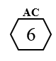
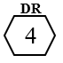

Weapons and Armor
Armor Class
Each single source of physical damage must deal damage greater than the Armor Class or the damage is negated. Armor Class does NOT reduce damage, ever, so if a source of damage exceeds the Armor Class, the full damage is applied to the creature.
As the goblin horde descends on the gnome PC, Lykaia in her werewolf form throws herself over the gnome’s body and curls into a ball to protect her. The goblins hack at Lykaia’s hide, hitting automatically because Lykaia is making no move to defend herself. However, Lykaia’s werewolf hide has an AC of 6. The goblins deal 3, 3, 3, 4, 5, 5, and 6 damage. Lykaia shrugs off the first six attacks, but the seventh bites deep enough to harm her.
Damage Reduction
Each single source of bludgeoning, piercing, and slashing damage that is not negated by the target’s Armor Class is reduced by the armor’s Damage Reduction. Leftover damage is subtracted from the target’s Stamina/Health. DR is always equal to or lower than AC.
Keeping with the example above, Lykaia’s werewolf hide has a DR of 4, so even though the goblin managed to break through her AC and hurt her, the 6 damage is reduced by 4 to 2. Her Stamina (if she has any left) is reduced by 2, and any leftover damage reduces her Health.
Armor
| Defense Penalty | AC | DR | Effects | |
|---|---|---|---|---|
| Gambeson | None | None | 1 | None |
| Leather jerkin | 2 | |||
| Mail shirt | 4 | 3 | Disadvantage on stealth | |
| Hauberk | 5 | |||
| Brigandine | 6 | |||
| Cuirass | 1 | 6 | 5 | None |
| Half-plate | 2 | 7 | Disadvantage on stealth | |
| Plate | 9 |
Weapon Groups
| Weapon Groups | Weapon Types |
|---|---|
| Blunt / Axe / Spike | Club, Mace, Warhammer, Flail, Morningstar, War Pick, Shortbow (unstrung), Greatclub, Maul, Greatbow (unstrung), Handaxe, Hatchet, Tomahawk, Battleaxe, Greataxe |
| Sword | Shortsword, Gladius, Scimitar, Sabre, Kopesh, Longsword, Bastard Sword, Hand-and-a-Half Sword, Broadsword, Zweihander, Claymore |
| Scythe | Sickle, 1-handed Scythe, War Sickle, Scythe, War Scythe |
| Dagger | Dagger, Dirk, Poignard, Sword-breaker |
| Spear / Polearm | Javelin, Short-spear, Glaive, Naginata, Long-spear, Halberd, Javelin (melee), Boar Spear, Lance, Pike, Quarterstaff, Longbow (unstrung) |
| Bow | Shortbow, Recurve Bow, Longbow, Greatbow |
| Crossbow | Hand Crossbow, Crossbow, Heavy Crossbow, Siege Crossbow |
| Sling | Sling, Staff-sling |
| Unarmed | Fists, Brass Knuckles, Caestus, Punch-dagger |
| Trap / Trickery | Bolo, Whip, Net |
| Dual-wield | (any two 1-handed weapons) |
Equipment
Combat Rules
Combat in [Your TTRPG Name] is resolved using the following mechanics...
Skills
Here are the skills available to your character...
Character Classes
Choose your class from the following options...
Networks
Each Downtime period, the Network can be directed to focus on a specific task – Build, Forage, Defend, etc. To determine its level of success, the Networker rolls a d20, adds and subtracts bonuses and penalties, and compares it to a DC. A success might produce Supply, mitigate a Crisis, or provide some other bonus.
The Network has four attributes: Boon, Bane, Population, and Supply.
Players must maintain the Network’s stability, ensuring its people are safe and its resources are properly allocated.